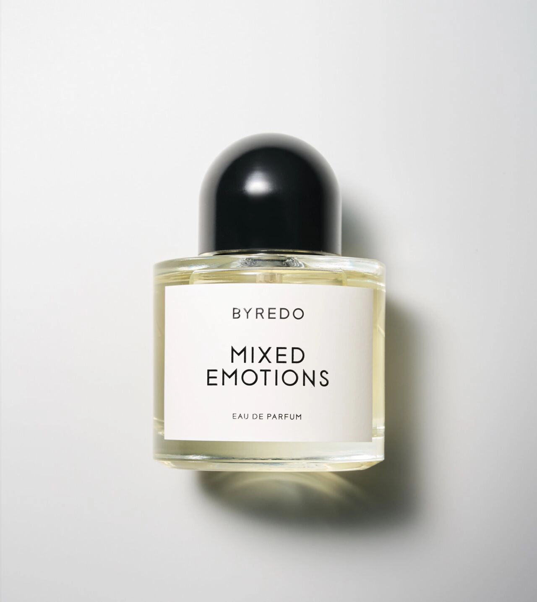

1996 was inspired by Kirsten 1996, a picture of a young girl taken by iconic photographers Inez & Vinoodh in that year. To them, "This picture represents the duality that underlies our work and our life together and the scent is very much Ben's impeccable and sensitive interpretation of that", a warm blend of black pepper, leather and patchouli.
NEW ITEM
In this evocation of contrasts and intrigue, raw noble ingredients stay true: a sparkling swathe of citrus and spice instantly transports through top notes of Mandarin, Coriander and Cumin; at heart, any flightiness is forgotten, where traditional and elegant, creamy Leather and Labdanum fix the fragrance, while a smoky cloak of narcotic

Distinguished, sombre, smoky, Sellier is a truly unbridled concentration of leather. The olfactory surprise explodes from the very first second. Sellier teleports us to a vintage smoking room with precious tobacco leaves, antique books and age-worn leather club chairs. Olfactory acrobatics that give the leather fragrance a good whip of the riding crop.

Drawing on the Byredo philosophy of translating fragmented memories and abstract ideas into scent, Mixed Emotions presents an olfactive sketch of our current, collective state of mind. Comforting notes of maté and the sharp sweetness of cassis sit within a wooden framework; the reassuring scent of black tea disturbed by violet leaf synthetics.
Vanille Antique is the first titular Byredo fragrance centered around perfumery’s rarest raw ingredient. Here, the smoky scent of vanilla bean becomes charged with history and character; transforming into something unexpected, less syrupy and more nuanced. The expected sweetness of vanilla is cut through by textures of earthiness and darkness, a warming mix of cashmere wood